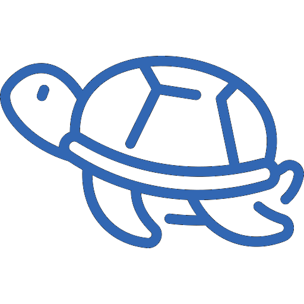
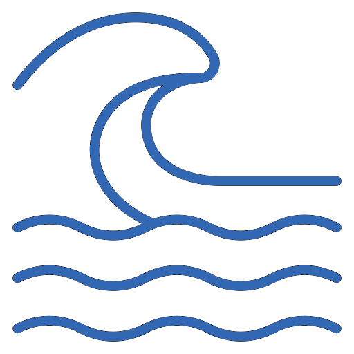
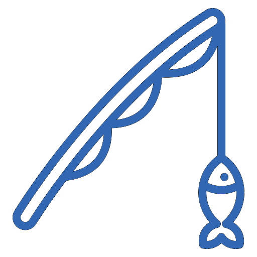

Sumário ecológico

Espécies Ameaçadas de Extinção
Tartaruga-Verde
Tartaruga-Cabeçuda
Tartaruga-Oliva
Tubarão-Limão
Tubarão-Lixa
Tubarao-Martelo
Cavalo Marinho Brasileiro
Cavalo Marinho Listrado
Peixe-Boi

Praias Impróprias para Banho
Praia de Jaguaribe
Praia do Capitão
Praia de Maria Farinha
Praia do Janga
Praia do Carmo
Praia de Bairro Novo
Praia de Rio Doce
Praia do Pina
Praia de Gaibu

Locais Impróprios para Pesca
Rio Capibaribe e Beberibe
Praias impróprias para pesca
Área de preservação ambiental APA
ONGs para contato
Instituto Recifes Costeiros
Projeto Meros do Brasil
Ecoassociados
Cadastre Sua ONG ->